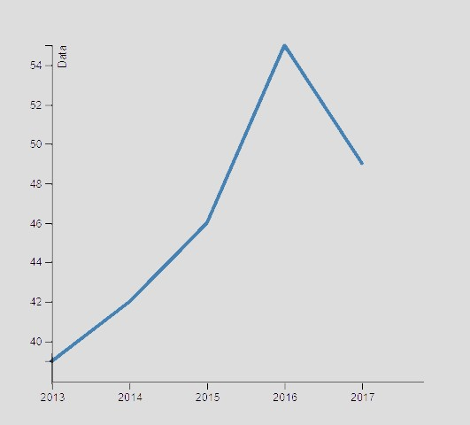

التونسي و الشهرية
فكر قبل ما تعمل إضراب على الزيادة
شكون ميحبش الزيادات؟
في الوظيفة العمومية ، شهريتك تعتيهالك الدولة
من ثورة 2011 تكر الإضرابات وخاصة للمطالبة بالزيادة في الأجور تقريباً في كامل القطاعات
هي صحيح الدنيا ماشية وتغلى اما زعما الزيادة هي الحل؟
عملتشي طلّة على ميزانية الدولة ؟
.بعد تفعيل حقّ النّفاذ للمعلومة, كلّ وزارة مطالبة باش بتقديم تقرير مفصّل على هزانيّتها و وين ماشية نفقاتها
.التقارير هاذي مفتوحة للمواطنين لكلّ و ينجمو عن طريقهم ياخذو فكرة على نسبة الأجور من جملة النّفقات
.أما صعيب برشا المواطن العادي يوسّع بالو و يقراهم
شقولك تاخو فكرة على المعلومات هاذي بكلّ بساطة ؟
الشّهريّة حسب ميزانيّة القطاعات
من ميزانية الدولة مخصصة للأجور
الأجور ياخذو جزء كبير من ميزانيّة الدولة
يا مواطن ما تحقرش أكا الشّلوط متاع الأجور راهم يسواو درا قدّاش من مليار
التّأجير العمومي VS المال العمومي
التّأجير العمومي
يخصّص للنّفع العامّ أي لإستعمال الجمهور مباشر أو لخدمة مرفق عامّ (مستشفيات, طرقات, مدارس, حدائق, …) في إطار القواعد العامّة للميزانيّة و المحاسبة
المال العمومي
يتمثل في تأجير أعوان الإدارة القارين منهم والغير قارين.عادةً ما ينقسم إلى تأجير أعوان الوزارة وتأجير أعوان المؤسسات التابعة لها. يتضمن الأجور والمنح ، كما يحتوي على الانتدابات والترقيات والتقاعد

نسبة التّأجير من جملة المال العام
وين ماشي المال العمومي؟
!تي هاو طلع شطرو ماشي في الأجور
شنيّا نجمو نعملو بالزّيادة؟
.نفرضو مثلا نزيدو 100 دينار لشهريّة كلّ موظّف في القطاع الحكومي
:هي حاجة هايلة, أما هاو شنوّا نجمو نعملو بها الفلوس هذيكا
... شوفو خسائر الإضرابات في تونس
خسائر الاضراب 6 سبتمبر 2018
( عمال السكك الحديدية )
341000000
خسائر الاضراب 13 ديسمبر 2012
( الاتحاد العام التونسي للشغل)
300000000
2018 خسائر الاضراب 24 اكتوبر
( اضراب عام )
150000000